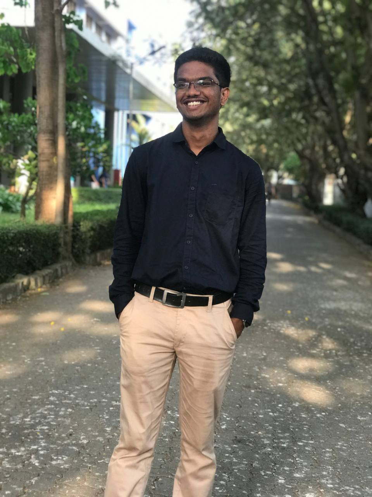

HERAMB HARIDAS

Summary
Highly motivated individual looking to build a career in ML and Data Science.
Education
- BTech: Bhartiya Vidya Bhavans Sardar Patel Institute of Technology
- XII: G.H. Raisoni Vidyaniketan
- X: Delhi Public School
Work Experience
Content Writer at SP-TBI
- Wrote reports on events like Networthin 2.0
- Wrote several blogs for comapanies like Brandbuddiez
Support Executive Intern at Virtua Galaxy Infotech
- Worked as a support executive to various banks
- Provided technical assistance in database management using MYSQL
Skills
Programming
Python, ML, C, Java, SQL
Tools
MS Excel, MS Word, Autocad, Blender, Canva